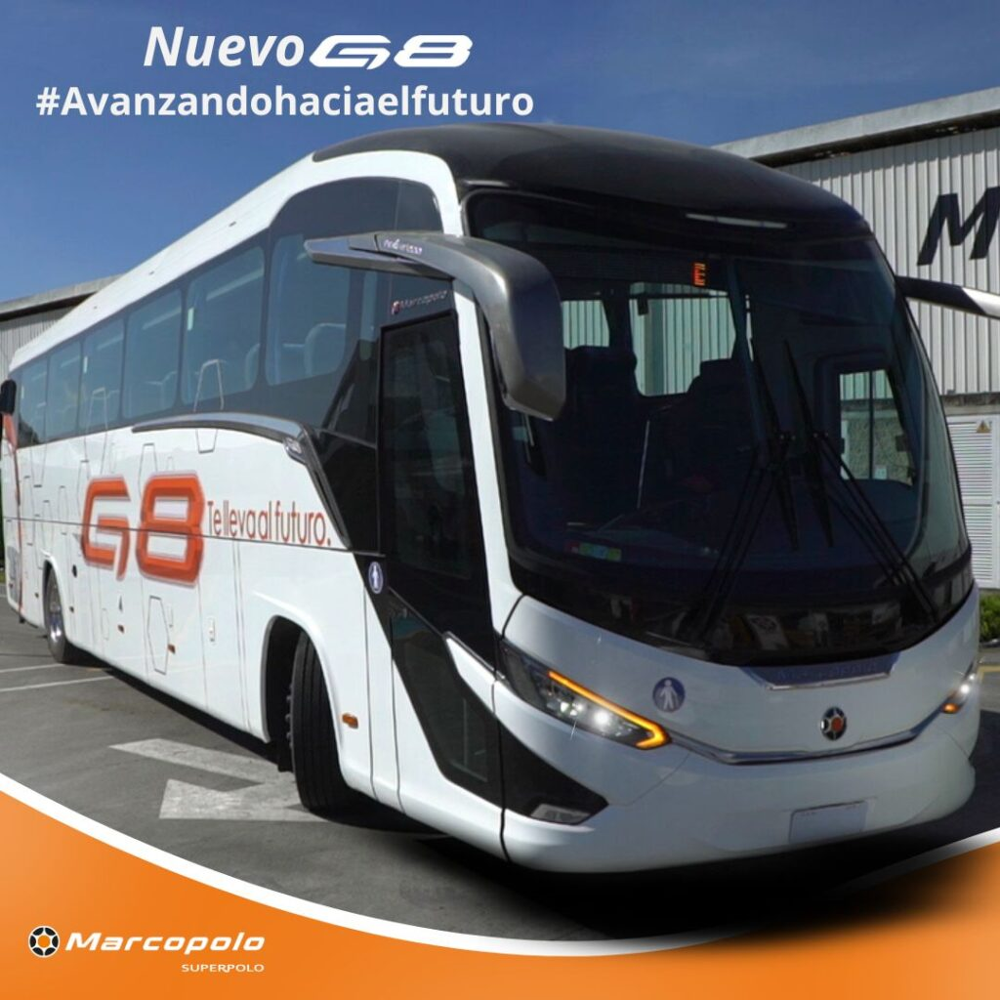
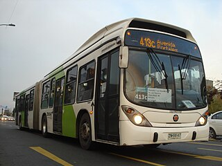

Marcopolo Superpolo
Historia

Fue fundada el 6 de agosto de 1949 en el municipio de Caxias do Sul, en el estado de Río Grande del Sur (Brasil) bajo el nombre de Nicola & Cia Ltda., con ocho socios y quince empleados. Fue una de las primeras industrias brasileñas en fabricar carrocerías para autobuses, las cuales inicialmente eran de madera.
En el inicio de actividades, hacer una carrocería de autobús exigía, además de esfuerzo, gran cantidad de tiempo para adaptar el chasis y transformar la madera en carrocería para autobús; así, la primera unidad de la empresa se fabricó en tres meses para entrega inmediata.
La evolución del sector automovilístico en la década de los 50 fue el punto clave para el crecimiento de la empresa, cuyo trabajo, en ese entonces artesanal, pasó a ser industrial y especializado. Surgen los chasis especialmente hechos para autobús, agilizando el proceso de fabricación de las carrocerías. La madera, con la que en ese entonces era hecha la estructura de la carrocería, fue sustituida por el metal en 1953. Además de los buses creados por Nicola, se ha creado otra marca llamada Ciferal, destinada al transporte urbano, que posteriormente tuvo fábrica propia.
En 1968 Nicola es renombrado a Marcopolo, inspirado en el viajero y explorador veneciano Marco Polo y por la creación del primer modelo del mismo nombre que la fábrica.
La empresa inició en una pequeña bodega hecha de madera, y en la actualidad es un conglomerado de 16 fábricas, distribuidas por el mundo de la siguiente manera: cuatro en Australia, tres en Brasil, dos en Argentina y en la India, y una en Colombia, México, China, Sudáfrica y Egipto.
El 2001, la marca Ciferal es adquirida por Marcopolo la mitad de las acciones. A fines de 2013, la marca Ciferal dejó de producir buses a favor de la marca Marcopolo.
El desenvolvimiento tecnológico y administrativo transformó la empresa en una de las mayores acreditadas del mercado, consolidada por la calidad de sus productos y productividad que hoy lleva por las rutas de Brasil y el mundo la imagen de la ciudad que la vio crecer.
Son diversos los ejemplos de los productos hechos de forma especial, como los fabricados para Emiratos Árabes Unidos con lugares separados para las mujeres, respetando la cultura local, así como el Andare Class con techo removible para transportar a los peregrinos a La Meca, atendiendo los motivos religiosos de los pueblos árabes. Marcopolo desenvuelve sus productos con características como piso bajo y rampas, que facilitan en acceso a los usuarios en condición de discapacidad.
Transporte Intermunicipal
Somos una Compañía líder en el diseño y ensamble de carrocerías. Ofrecemos soluciones integrales para el transporte de pasajeros en Transporte Municipal, Transporte Masivo, Transporte Urbano, Transporte Escolar y Especiales.
Paradiso 1200 G8
Transporte Intermunicipal
New Audace
Transporte Intermunicipal
Microsenior
Transporte Intermunicipal
Ideale 800
Transporte Intermunicipal
Paradiso 1600 New G7
Transporte Intermunicipal
New Senior 680
Transporte Intermunicipal